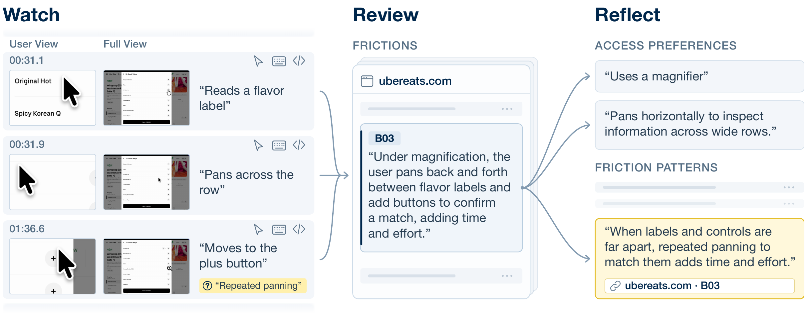

General Accessibility Modeling (GAM): Understanding Accessibility Needs from Computer Use (PDF)
UIST Adjunct ’26 (Demo)
Abstract for General Accessibility Modeling (GAM): Understanding Accessibility Needs from Computer Use
Accessibility research has long envisioned systems that adapt to users' abilities and contexts. Yet current ability-based systems lack reliable ways to learn users' accessibility needs in situ, leaving many individualized and context-specific barriers unaddressed. We present the General Accessibility Model (GAM), an architecture that learns users' accessibility needs by observing everyday computer use. From screen recordings and input streams, GAM generates confidence-weighted propositions describing a user's interaction strategies and in-situ accessibility barriers. Because prolonged interactions are necessary to understand user needs, GAM employs efficient segmentation and context compression, periodically reflecting on observations to revise propositions. We demonstrate how GAM can enable accessibility applications, including accessibility report generation, feature recommendation, and just-in-time accessibility repair. GAM illustrates how everyday interaction can become a source of continuously updated knowledge for personalized accessibility support.